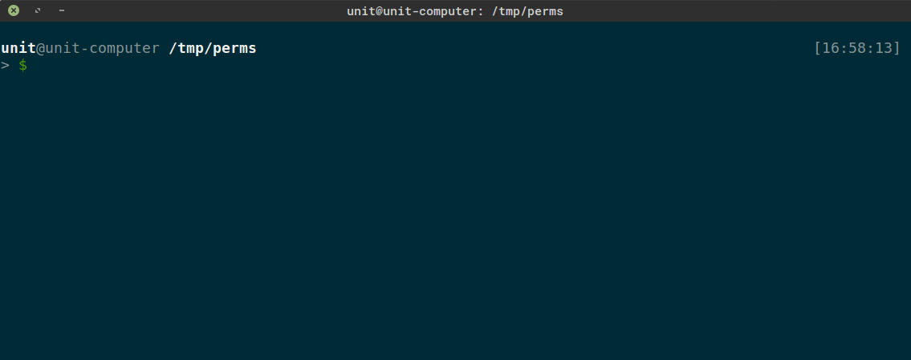

Файлы для операционной системы Linux - это просто поток байтов. Эта концепция также распространяется на физические устройства, что упрощает обмен и хранение данных. Как я уже говорил, первый бит прав доступа указывает на тип файла и что типов этих даже не 2.
- Файлы физических устройств.
- PIPE - файлы межпроцесного взаимодействия.
- Sockets - Сокеты.
- Simlinks - символические ссылки.
1. Файлы физических устройств.
Как уже говорилось, с точки зрения ОС Linux, все подключаемые к компьютеру устройства (жесткие и съемные диски, терминал, принтер, модем и т. д.), представляются файлами. Файлы физ. устройств храняться в системном каталоге "/dev". Если, например, надо вывести на экран какую-то информацию, то система как бы производит запись в файл /dev/tty01.
2. PIPE.
Еще один тип специальных файлов — именованные каналы, или буферы FIFO (First In — First Out). Файлы этого типа служат в основном для того, чтобы организовать обмен данными между разными приложениями (pipe переводится с английского как труба).
3. Sockets.
Гнезда — это соединения между процессами, которые позволяют им взаимодействовать, не подвергаясь влиянию других процессов. Вообще сокеты (и взаимодействие программ при помощи сокетов) играют очень важную роль во всех Unix-системах, включая и Linux: они являются ключевым понятием TCP/IP и соответственно на них целиком строится Интернет. Однако с точки зрения файловой системы сокеты практически неотличимы от именованных каналов: это просто метки, позволяющие связать несколько программ. После того как связь установлена, общение программ происходит без участия файла гнезда: данные передаются ядром ОС непосредственно от одной программы к другой.
4. Simlinks.
Ссылки бывают двух видов: жесткие и символические.
Жесткие ссылки просто еще одно имя для исходного файла. Она прописывается в индексном дескрипторе исходного файла. После создания жесткой ссылки невозможно различить, где исходное имя файла, а где ссылка. Если удалить один из этих файлов (точнее одно из этих имен), то файл еще сохраняется на диске (пока у него есть хоть одно имя-ссылка). Особенностью жестких ссылок является то, что они прямо указывают на номер индексного дескриптора, а, следовательно, такие имена могут указывать только на файлы внутри той же самой файловой системы (ФС) (т. е. на том же самом носителе, на котором находится каталог, содержащий это имя).
Символические ссылки тоже могут рассматриваться как дополнительные имена файлов, но в то же время они представляются отдельными файлами — файлами типа символических ссылок. В отличие от жестких ссылок символические ссылки могут указывать на файлы и директории, расположенные в другой файловой системе, например, на монтируемом носителе, или даже на другом компьютере. Если исходный файл удален, символическая ссылка не удаляется, но становится бесполезной.
Первые 3 типа файлов создаются ОС или процессами, мы можем создавать для себя ссылки на файлы. Делается это с помошью команды "ln [OPTIONS] [TARGET] [LINK NAME]". Например у меня, из-за локали, в домашней директории лежат каталоги с русскими именами (Загрузки, Документы, etc) и мне удобно делать символические ссылки на эти каталоги с английскими именами, чтобы не переключать раскладку при навигации. Можешь попробовать создать символьную ссылку на директорию "/var/log" в свой домашний каталог. Символические ссылки создаются ключем "-s", жесткие - без опций.
Если удалить каталог "/tmp/perms/log" то удалится "/var/log", для удаления ссылок существует команда "unlink [LINK_NAME]".
Если ты создал в каталоге "dir1" символическую ссылку, которая указывает на какой-то другой каталог, то можешь переместить каталог "dir1" куда угодно, символическая ссылка при этом будет оставаться корректной. Точно так же можно перемещать сами символические ссылки. И осторожно с относительными путями, например: использование ".." (это ссылка на родительский каталог) в полных именах файлов, включающих символические ссылки, поскольку по символической ссылке нельзя проследовать в обратном направлении, а ".." всегда означает истинный родительский каталог данного каталога.
Теперь более подробно расскажу о работе с файлами на физических устройствах.
Создание директорий
Начнем с создания директорий. Команда "mkdir [OPTIONS] [PATH]" создаст директорию по указанному пути если путь не занят. Опция "-m" задает режим доступа для новой директории, а "-p" создаст промежуточные директории (такой подход еще называют рекурсивным). Пример созддания директории "tmp" в домашней папке:
Правила указания путей действуют везде и всегда.
Создание Файлов
Создать файл можно несколькими способами:
1. cat
Команда "cat" не делает ничего кроме вывода содержимого файла, а создавать файлы можно благодаря перенаправлению вывода этой команды (подробнее об этом позже). Еще кат умеет объединять вывод (конкатенация) нескольких файлов. Таким образом можно создать файл так:
И содержимое "file1" и "file2" будет записано в файл "file". Также можно сделать такой трюк
И написать какой то текст, после чего нажать комбинацию "Ctrl+C" (Используется для прерывания работы в терминале) и все что ты введешь, будет записано в файл "file".
Есть еще команда "tac", которая делает тоже самое, только с реверсом строк на выводе.
2. echo
Ехо, также как и кат, просто перенаправляет вывод, отправляет на стандартный поток вывода, то что было передано как параметр. Например:
Еще:
И еще:
3. touch
Touch утилита серьезнее и мы о ней еще будем говорить. Создать файл с помощью touch просто:
Файл будет пустым.
4. Nano
nano - это уже консольный текстовый редактор. Он легкий, все шоткаты описаны внизу (символ "^" означает <Ctrl>).
Копирование и перемещение
Для копирования файлов и папок используется команда "cp [OPTIONS] [SOURCE] [DESTINATION]", при этом есть 2 варианта (если копируются папки): копирование только содержимого в существующий каталог и копирование каталога с содержимым. Опции для команды такие:
- -p - сохранить время модификации файла и максимально возможные полномочия (без этой опции для нового файла задаются права, соответствующие правам запустившего команду пользователя).
- -R или -r - рекурсивное копирование.
- -d - если задать эту опцию, то символические ссылки будут оставаться ссылками (а иначе вместо ссылки копируется файл, на который дается ссылка).
- -f - перезаписать существующие в DESTINATION файлы без дополнительных предупреждений.
Когда копируется директория всегда указывай ключ "-r", если копируется содержимое директории и нужно скопировать только файлы, то ключ "-r" не нужен.

Для перемещения файлов используется команда "mv", ее же используют для переименования. Синтаксис тот же, а вот порядок указания путей для mv другой, не поддерживаются маски (*.txt например).
Удаление файлов и папок
Команда "rm" используется для удаления файловых объектов. Синтаксис следующий "rm [OPTIONS] [PATH]". В качесве опций крайне рекомендую всегда использовать "-i". Эта опция будет требовать дополнительного подтверждения. Еще есть опция "-r" для рекунсивного удаления директории. Опасная штука, так как удаляет жестко и можно убить систему например так:
Будет удалять все, что может удалить пользователь. Ключ "-f" нужен чтобы игнорировать несуществующие файлы и аргументы, ни о чем не спрашивать. Запуск от рута убьет систему, без - поколечит.
Чтение файлов
Для чтения больших файлов (например файлов документации) используйте команды "more" и "less". Команда-фильтр "more" выводит содержимое файла на экран отдельными страницами, размером как раз в целый экран. Для того, чтобы увидеть следующую страницу, надо нажать на клавишу пробела. Нажатие на клавишу <Enter> приводит к смещению на одну строку. Кроме клавиш пробела и <Enter> в режиме паузы еще некоторые клавиши действуют как управляющие (например, клавиша <B> возвращает вас на один экран назад), но я не буду приводить полного их перечня, как и перечня опций команды. Тебе для начала надо еще только запомнить, что выйти из режима просмотра можно с помощью клавиши <Q>, так как если ты этого не знаешь, то тебе придется долго и нудно нажимать пробел, пока вы не доберешься до конца длинного файла. Обо всех опциях команды "more" можно прочитать в интерактивном руководстве man.
Утилита "less", разработанная в рамках проекта GNU, содержит все функции и команды управления выводом, имеющиеся в программе "more", и некоторые дополнительные, например, позволяет использовать клавиши управления курсором (<Стрелка вверх>, <Стрелка вниз>, <PgUp>, <PgDown>) для перемещения по тексту.
Команды "more" и "less" позволяют производить поиск подстроки в просматриваемом файле, причем команда "less" позволяет производить поиск как в прямом, так и в обратном направлении. Для организации поиска строки символов 'string' надо набрать в командной строке программы в нижней части экрана (там, где двоеточие) '/string'. Если искомая строка будет найдена, будет отображен соответствующий кусок текста, причем найденная строка будет находиться в самом верху экрана.
Поиск файлов
Команда find может искать файлы по имени, размеру, дате создания или модификации и некоторым другим критериям. Общий синтаксис команды "find" имеет следующий вид: "find [PATH1..PATHN] [OPTIONS] [ACTION]". Список путей для поиска разделяется пробелом, опции описывают критерии поиска, а последним параметром описывается действие которое нужно применить к каждому найденому файлу.
При поиске можно пользоваться шаблонами (масками). Чаще всего маски файлов строятся с помощью специальных символов "*" и "?". Символ "*" используется для замены произвольной строки символов.
-
"*" — соответствует всем файлам, за исключением скрытых;
-
".*" — соответствует всем скрытым файлам (но также текущему каталогу "." и каталогу уровнем выше "..": не забывайте об этом!);
-
"*.*" — соответствует только тем файлам и каталогам, которые имеют "." в середине имени, или оканчиваются на точку;
-
"p*r" — соответствует и "peter" и "piper";
-
"*c*" — соответствует и "picked" и "peck".
Символ "?" заменяет один произвольный символ, поэтому index?.htm будет соответствовать именам index0.htm, index5.htm и indexa.htm.
Кроме "*" и "?" в Linux при задании шаблонов имен можно использовать квадратные скобки [], в которых дается либо список возможных символов, либо интервал, в который должны попадать возможные символы. Например, "[abc]*" соответствует всем именам файлов, начинающимся с a, b, c или "*[I-N1-3]" соответствует файлам, имена которых оканчиваются на I, J, K, L, M, N, 1, 2, 3.
Основные критерии поиска find:
- -name mask - имя файла
- -path mask - абсолютное имя файла (это значит, /path/to/file/filename.ext).
- -group str - поиск по группе.
- -size int[c] - поиск по размеру файла, если указано "c" значит размер в байтах.
- -mtime int - поиск файлов измненных int дней назад.
- -newer file - файлы кторые изменялись после "file".
- -type chr - поиск по типу
mask - маска поиска, str - текст (строка), int - число, chr - буква. Для поиска по группе надо написать строковое представление группы, размер указывается десятичным числом, а вот в качестве типа можно указать одно из:
- b - блок-ориентированные устройства
- c - байт-ориентированные устройства
- d - директория
- f - обычный файл
- p - именованный канал
- l - символическая ссылка
Поиск с помощью "find" всегда рекурсивный. Например так можно найти все txt файлы в текущем каталоге и в под каталогах:
Или удалить в текущем каталоге все файлы, к которым пользователи не обращались в течение 30 дней:
Разбить файл на части
Если будет необходимо разбить файл на части, то можно использовать утилиту "split". Указать нужно 3 параметра: "-b" размер части и k (килобайты), m (мегабайты) по умолчанию размер в байтах; название вхоного файла; префикс для кусков.
Например:
Теперь можно перенести куски (chank.aa, chank.ab, chank.ac, chank.ad, chank.ae) и собрать обратно:
Еще можно разбить файл по кол-ву строк:
Сравнение файлов
Сравнивать файлы можно с помощью "cmp" который просто сообщит о наличии изменений или с помощью "diff" который выведит список этих изменений.
К примеру ты написал скрипт и раздал его друзьям. Позже ты переписал часть кода, улучшив функционал. Теперь перед тобой возникает вопорос распространить обновление. Как записать изменения в файл ты уже догадался. А вот применить эти изменения может команда "patch".